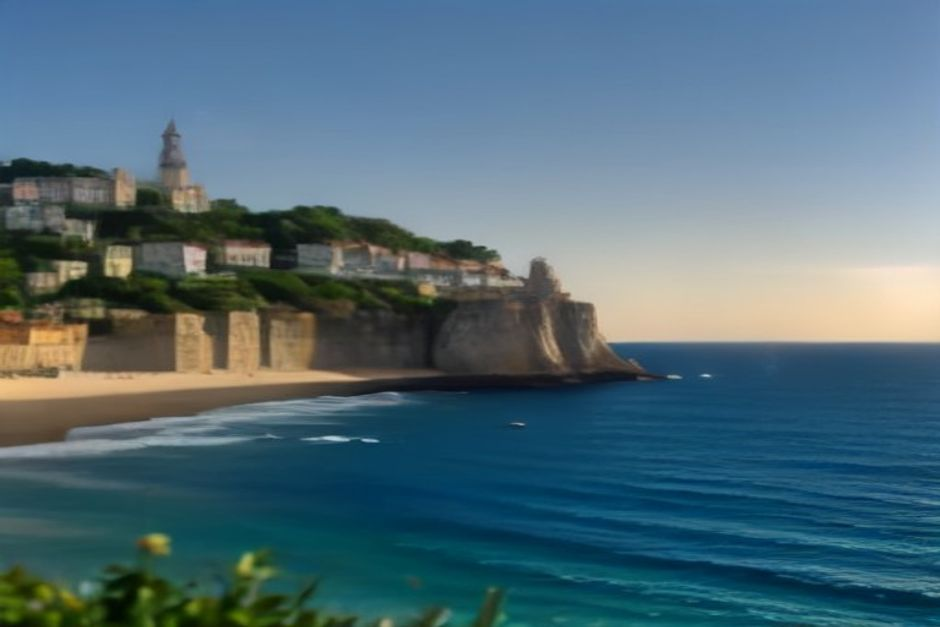

Une fois par an, le village de pêcheurs de Caniçal confie sa sainte patronne à la mer. Une vingtaine de chalutiers, parés pour l'occasion, portent sa statue le long de la côte jusqu'à une chapelle que la plupart des visiteurs ne remarquent même pas — une tradition qui n'a rien à voir avec le tourisme et tout à voir avec trois siècles de tempêtes atlantiques. Voici quand elle a lieu en 2026, à quoi ressemble vraiment la procession maritime, et comment l'observer depuis Funchal.
Quand a lieu la Festa de Nossa Senhora da Piedade en 2026 ?
Elle a lieu le troisième week-end de septembre, ce qui situe l'édition 2026 les 19 et 20 septembre à Caniçal, un village de pêcheurs à la pointe orientale de Madeira. La fête honore Nossa Senhora da Piedade — Notre-Dame de la Piété — sainte patronne de la paroisse et, plus précisément, protectrice des pêcheurs qui travaillent sur ce tronçon de côte atlantique depuis des générations.

Qu'est-ce que la fête, et pourquoi les pêcheurs la financent-ils ?
C'est une fête votive, financée et organisée en grande partie par la communauté des pêcheurs de Caniçal, qui met traditionnellement de côté chaque année une part du produit de la pêche pour la couvrir. Caniçal fut le principal port baleinier de Madeira jusqu'à la fin de la chasse commerciale à la baleine au début des années 1980, et la pêche au thon reste aujourd'hui centrale pour le village — ce qui explique précisément pourquoi la dévotion envers une sainte associée à la protection en mer y est restée si forte, longtemps après que des traditions similaires se sont éteintes dans d'autres paroisses côtières. La fête attire chaque année des centaines de visiteurs venus de toute l'île et d'ailleurs, mais elle demeure, avant tout, une promesse que le village se fait à lui-même.
Pourquoi la chapelle est-elle construite sur une falaise isolée ?
Selon la tradition locale, un groupe de marins surpris par une tempête au large de cette côte, persuadés que leur bateau allait se briser sur les rochers, firent le vœu de construire une chapelle en remerciement s'ils survivaient. Ils tinrent leur promesse — la petite Capela da Piedade, datant probablement du XVIIe siècle, se dresse depuis sur une colline isolée connue sous le nom de Monte Gordo, ou Monte da Piedade, dominant Prainha, l'une des très rares plages de sable naturelles de Madeira, tout près du début de la péninsule de Ponta de São Lourenço. Le décor est saisissant, délibérément reculé, et c'est précisément pour cela que la fête a besoin de bateaux — la chapelle n'a jamais été conçue pour être facilement accessible par voie terrestre.
Que se passe-t-il concrètement pendant la procession maritime ?
Le point d'orgue du week-end est la procissão marítima (procession maritime), qui se déroule le samedi après-midi. Vers 15h, la statue de Nossa Senhora da Piedade est portée à pied depuis l'église paroissiale jusqu'au port, où patiente une vingtaine de chalutiers locaux, fraîchement pavoisés de drapeaux et de guirlandes pour l'occasion. Un bateau, tiré au sort parmi la flotte, reçoit l'honneur de porter lui-même la statue. La flottille longe ensuite ensemble la côte vers le Monte da Piedade, au pied de la chapelle, avant que l'image ne soit finalement ramenée à l'église — pendant qu'à terre, le reste du week-end se remplit d'une messe, d'une fête foraine avec cuisine et vins locaux, et de musique live jusque tard dans la soirée.
Comment se rendre à Caniçal depuis Funchal, et peut-on combiner avec une excursion en bateau ?
Caniçal se trouve à la pointe orientale de Madeira, à environ 30 km de Funchal et à 40–50 minutes de route via la voie express VE1, tout près du début de la péninsule de Ponta de São Lourenço. Mieux vaut la prévoir comme une sortie à part entière plutôt qu'en complément : Caniçal est bien à l'est du littoral que couvre réellement un bateau privé au départ de la Marina do Funchal, elle ne se combine donc pas avec une matinée en mer sur le même trajet. Il vaut mieux découper la journée en deux temps — une excursion en bateau privé avec Chifbay le matin, le long de la côte sud-ouest plus proche, vers Câmara de Lobos et Cabo Girão, puis un trajet dédié en voiture vers l'est l'après-midi jusqu'à Caniçal, à temps pour voir le port se remplir avant le départ de la procession.
Que voir d'autre près de Caniçal ?
Le Museu da Baleia (musée de la baleine) est l'étape incontournable, retraçant en détail l'histoire baleinière du village, bien avant que l'industrie ne cède la place au tourisme d'observation des baleines. Prainha, juste au pied de la chapelle, est l'une des seules plages de sable naturelles de toute l'île. Et la péninsule de Ponta de São Lourenço, un peu plus loin à l'est, offre l'une des randonnées côtières les plus arides et désertiques de Madeira — de quoi occuper le reste d'une journée organisée autour des festivités du soir.
La chapelle n'a jamais été conçue pour être facilement accessible par voie terrestre — c'est précisément là tout l'intérêt des bateaux.
La Festa de Nossa Senhora da Piedade n'est pas mise en scène pour un public, et c'est justement pour cela qu'elle mérite le déplacement — un authentique village de pêcheurs qui tient une promesse séculaire, jouée sur l'eau plutôt que sur une scène.
Questions fréquentes
Quand a lieu la Festa de Nossa Senhora da Piedade en 2026 ?
Les 19 et 20 septembre 2026, le troisième week-end du mois, à Caniçal.
Qu'est-ce que la procession maritime ?
Une flottille d'une vingtaine de bateaux de pêche décorés qui, le samedi après-midi, transporte la statue de la sainte le long de la côte jusqu'à la chapelle perchée sur la falaise, puis la ramène.
Pourquoi la chapelle est-elle sur une falaise isolée ?
La tradition locale raconte qu'elle fut construite par des marins en remerciement d'avoir survécu à une tempête, probablement au XVIIe siècle, sur une colline dominant la plage de Prainha.
Peut-on la combiner avec une excursion en bateau depuis Funchal ?
Pas dans la même sortie — Caniçal est bien à l'est de la côte couverte par les bateaux de Chifbay, prévoyez donc un trajet en voiture séparé l'après-midi pour la fête.
Que voir d'autre près de Caniçal ?
Le Museu da Baleia, la plage de Prainha, et la péninsule de Ponta de São Lourenço juste après le village.